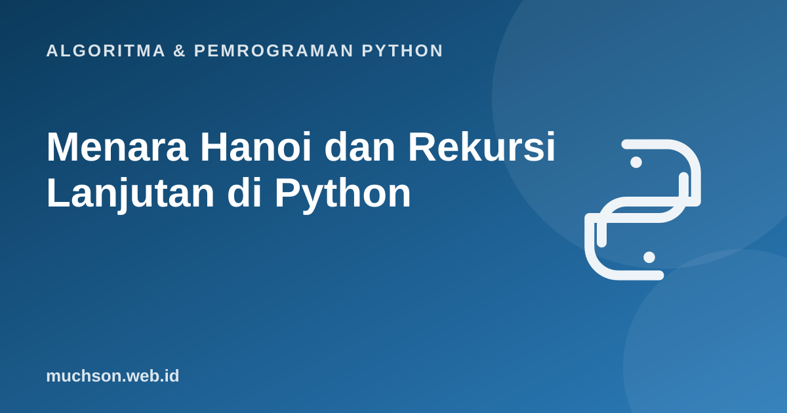

Beranda › Artikel › Algoritma & Pemrograman Python
Algoritma & Pemrograman PythonMenara Hanoi dan Rekursi Lanjutan di Python
Rekursi terasa mudah pada faktorial, tetapi baru sungguh teruji pada masalah yang tidak bisa dibayangkan langkah demi langkah di kepala. Menara Hanoi adalah contoh klasiknya: aturannya sederhana, namun urutan solusinya hampir mustahil ditebak tanpa berpikir rekursif. Di sini Anda belajar mempercayai rekursi: asumsikan masalah yang lebih kecil sudah beres.
Sebaiknya sudah paham: fungsi, rekursi dasar (faktorial, Fibonacci)

Setelah membaca dan mencoba materi ini, Anda mampu:
- menyusun solusi rekursif dengan kasus dasar dan langkah rekursif yang benar
- menyelesaikan Menara Hanoi dan membuktikan jumlah langkah minimum 2ⁿ − 1
- menghasilkan permutasi dengan rekursi
- menjelaskan batas kedalaman rekursi dan kapan beralih ke iterasi
Aturan permainan
Ada tiga tiang dan n cakram bertumpuk menurun di tiang A. Pindahkan semuanya ke tiang C dengan aturan: pindahkan satu cakram per langkah, dan jangan pernah menaruh cakram besar di atas cakram yang lebih kecil. Mainkan sendiri (mulai dari 2 atau 3 cakram) sebelum membaca penjelasannya.
Berpikir rekursif: percayai masalah yang lebih kecil
Untuk memindahkan n cakram dari A ke C: (1) pindahkan n-1 cakram teratas dari A ke B (bantu: C); (2) pindahkan cakram terbesar dari A ke C; (3) pindahkan n-1 cakram dari B ke C (bantu: A). Langkah 1 dan 3 adalah masalah yang sama persis dengan ukuran lebih kecil. Kasus dasar: 0 cakram, tidak perlu melakukan apa pun.
def hanoi(n, asal, tujuan, bantu, langkah):
if n == 0: # kasus dasar
return
hanoi(n - 1, asal, bantu, tujuan, langkah) # 1. n-1 cakram ke tiang bantu
langkah.append((n, asal, tujuan)) # 2. cakram terbesar ke tujuan
hanoi(n - 1, bantu, tujuan, asal, langkah) # 3. n-1 cakram dari bantu ke tujuan
langkah = []
hanoi(3, "A", "C", "B", langkah)
for i, (cakram, a, t) in enumerate(langkah, 1):
print(f"{i}. cakram {cakram}: {a} -> {t}")
print("total:", len(langkah))1. cakram 1: A -> C
2. cakram 2: A -> B
3. cakram 1: C -> B
4. cakram 3: A -> C
5. cakram 1: B -> A
6. cakram 2: B -> C
7. cakram 1: A -> C
total: 7
Mengapa tepat 2ⁿ − 1 langkah?
Misalkan T(n) adalah jumlah langkah. Dari tiga langkah rekursif di atas: T(n) = T(n-1) + 1 + T(n-1) = 2T(n-1) + 1, dengan T(0) = 0.
| n | T(n) = 2T(n-1) + 1 | 2ⁿ − 1 |
|---|---|---|
| 0 | 0 | 0 |
| 1 | 2·0 + 1 = 1 | 1 |
| 2 | 2·1 + 1 = 3 | 3 |
| 3 | 2·3 + 1 = 7 | 7 |
| 4 | 2·7 + 1 = 15 | 15 |
| 10 | 1.023 | |
| 64 | 18.446.744.073.709.551.615 |
T(n) = 2T(n − 1) + 1, T(0) = 0 ⇒ T(n) = 2ⁿ − 1
Bukti dengan induksi: basis T(0) = 0 = 2⁰ − 1. Langkah: bila T(n−1) = 2ⁿ⁻¹ − 1, maka T(n) = 2(2ⁿ⁻¹ − 1) + 1 = 2ⁿ − 1. ∎ Pertumbuhan eksponensial inilah yang membuat legenda 64 cakram (dengan satu langkah per detik) memakan waktu sekitar 585 miliar tahun.
def jumlah_langkah(n):
return 0 if n == 0 else 2 * jumlah_langkah(n - 1) + 1
for n in [1, 5, 10, 20, 30]:
print(n, jumlah_langkah(n), 2 ** n - 1 == jumlah_langkah(n))
detik = 2 ** 64 - 1
print("64 cakram, 1 langkah/detik:", round(detik / (365.25 * 24 * 3600) / 1e9), "miliar tahun")1 1 True
5 31 True
10 1023 True
20 1048575 True
30 1073741823 True
64 cakram, 1 langkah/detik: 585 miliar tahun
Contoh lain: semua permutasi
Susunan semua huruf dari "ABC": pilih satu huruf sebagai awal, lalu permutasikan sisanya secara rekursif.
def permutasi(huruf):
if len(huruf) <= 1: # kasus dasar
return [huruf]
hasil = []
for i, h in enumerate(huruf):
sisa = huruf[:i] + huruf[i + 1:]
for p in permutasi(sisa): # permutasi dari sisanya
hasil.append(h + p)
return hasil
print(permutasi("ABC"))
print(len(permutasi("ABCD")), "= 4! =", 4 * 3 * 2 * 1)['ABC', 'ACB', 'BAC', 'BCA', 'CAB', 'CBA']
24 = 4! = 24
Batas kedalaman rekursi
Setiap pemanggilan menambah satu frame pada call stack. Python membatasi kedalamannya (bawaan sekitar 1000) untuk mencegah kehabisan memori.
import sys
print("batas bawaan:", sys.getrecursionlimit())
def turun(n):
return 0 if n == 0 else 1 + turun(n - 1)
print(turun(500))
try:
turun(5000)
except RecursionError as e:
print("RecursionError:", str(e)[:45])
def turun_iteratif(n): # versi iteratif tidak dibatasi call stack
hasil = 0
while n > 0:
hasil, n = hasil + 1, n - 1
return hasil
print(turun_iteratif(5000))batas bawaan: 1000
500
RecursionError: maximum recursion depth exceeded
5000
Python tidak mengoptimalkan rekursi ekor (tail recursion), sehingga rekursi sangat dalam harus diubah menjadi perulangan. Bahasa seperti Scheme menjamin optimasi tersebut.
1. Berapa langkah untuk 6 cakram? Berapa kali cakram terkecil berpindah?
2. Tulis fungsi rekursif untuk menghitung 2ⁿ tanpa operator ** (dengan perkalian saja).
def pangkat2(n): return 1 if n == 0 else 2 * pangkat2(n - 1). Versi lebih cepat: pangkat2(n//2)**2 dengan penanganan ganjil, O(log n).3. Tulis fungsi rekursif untuk membalik string.
def balik(s): return s if len(s) <= 1 else balik(s[1:]) + s[0]4. Mengapa jumlah permutasi n huruf unik adalah n!?
- Berpikir rekursif: tentukan kasus dasar, lalu nyatakan masalah dengan masalah yang lebih kecil dan percayai hasilnya.
- Hanoi: T(n) = 2T(n-1) + 1 menghasilkan 2ⁿ − 1 langkah, eksponensial.
- Permutasi n unsur berjumlah n!.
- Python membatasi kedalaman rekursi; ubah ke iterasi bila terlalu dalam.
Tanya jawab
Apakah ada solusi Hanoi tanpa rekursi?
Mengapa Hanoi dipakai untuk mengajar rekursi?
Berapa batas rekursi yang aman?
sys.setrecursionlimit dapat menaikkannya, tetapi nilai terlalu besar berisiko menghentikan interpreter secara paksa.Referensi
- Cormen, Leiserson, Rivest, Stein, Introduction to Algorithms (edisi ke-4, MIT Press, 2022)
- Dokumentasi Python: sys.getrecursionlimit
- Dokumentasi Python: itertools.permutations
- MIT OpenCourseWare 6.0001, Lecture 6: Recursion, Dictionaries
- Anany Levitin, Introduction to the Design and Analysis of Algorithms, bab Decrease-and-Conquer